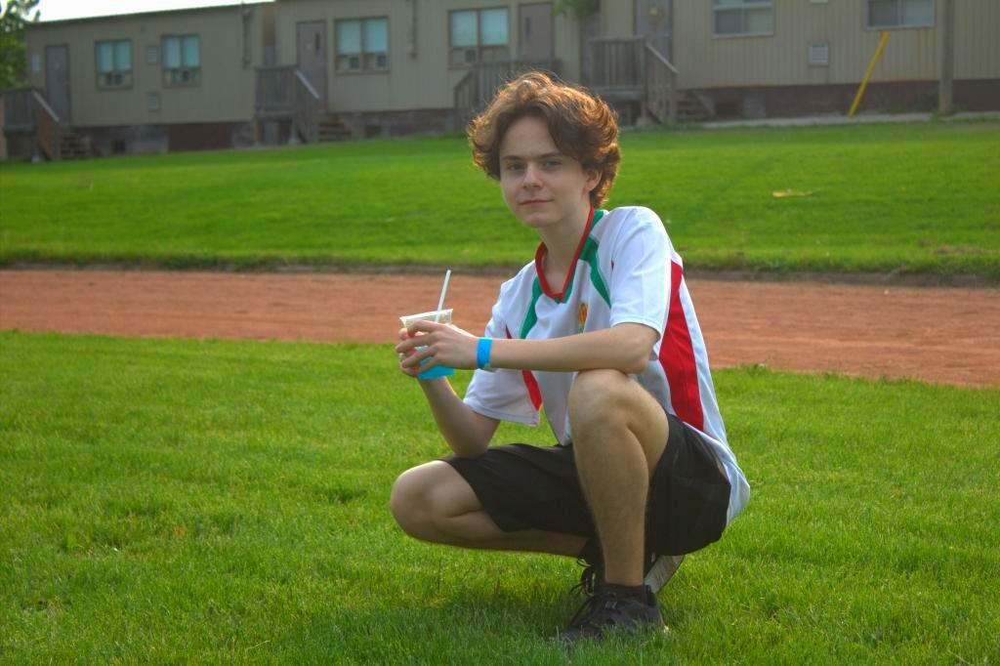
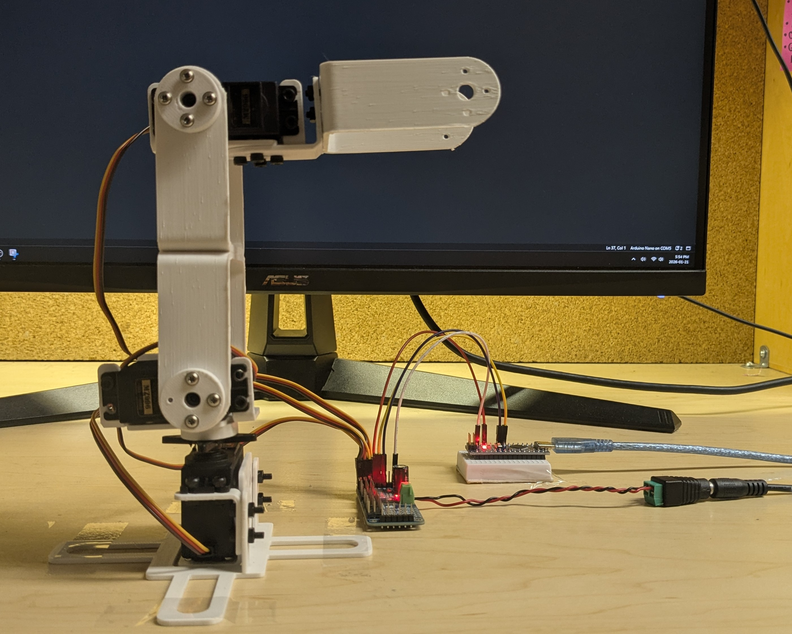
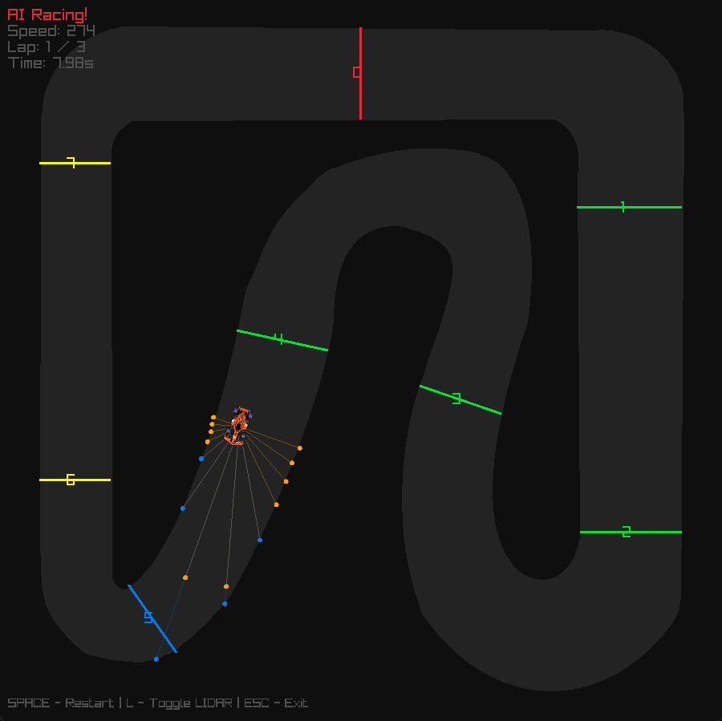
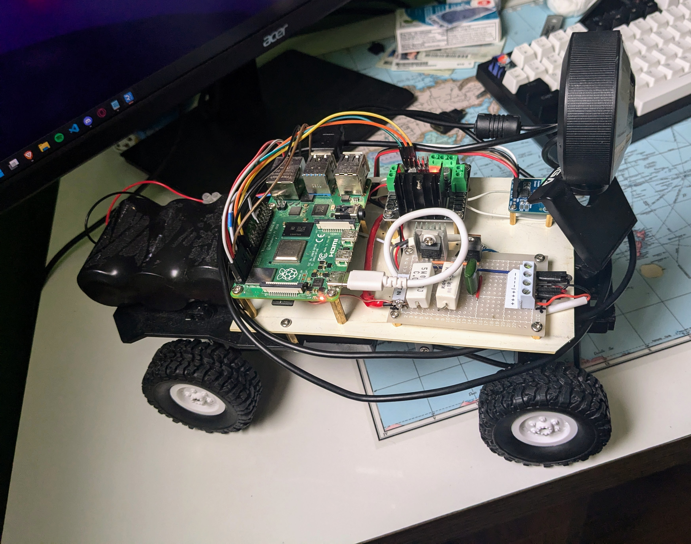
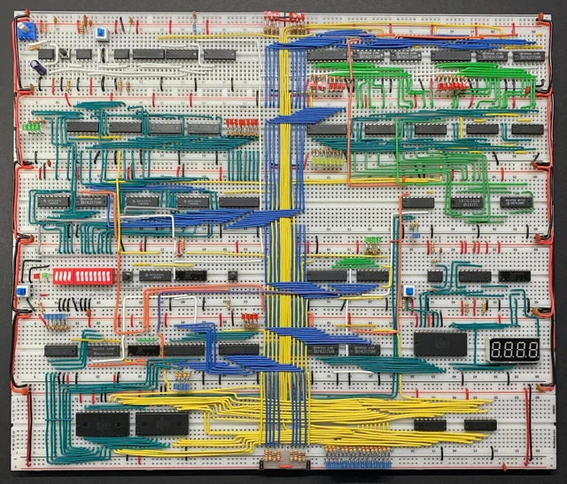
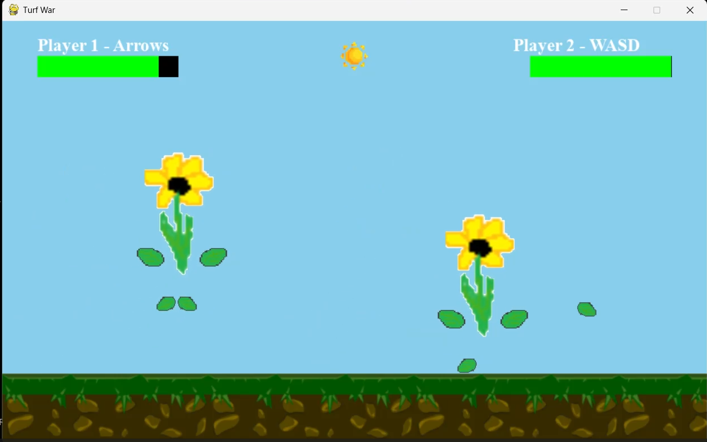
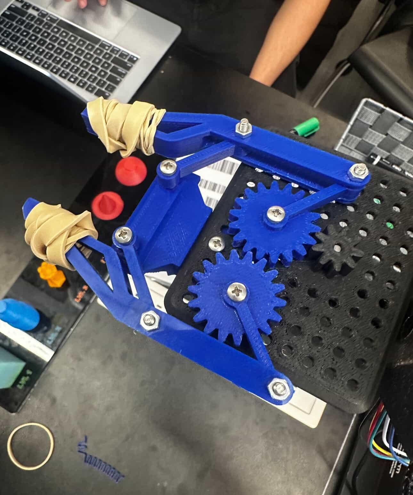
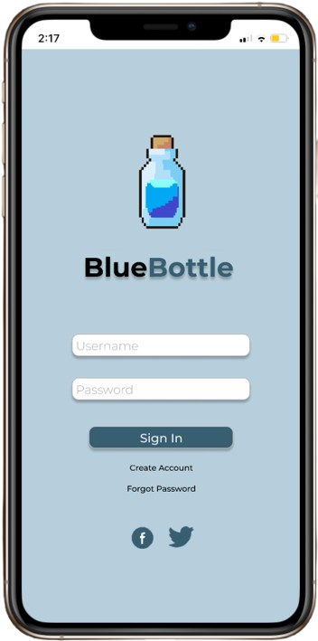

Anthony Atanassov
Engineering Student | Robotics Enthusiast
I am a second year Mechatronics Engineering student at McMaster University with hands-on experience in robotics, embedded systems, and hardware-software integration through FRC competitions and personal projects.

Featured Projects
A showcase of my robotics, embedded systems, and software development work
3-DOF Robotic Arm with Inverse Kinematics
Built a 3-degree-of-freedom robotic arm with Arduino and implemented analytical inverse kinematics for precise end-effector positioning (±2mm accuracy). Features a custom C++/Raylib desktop GUI with interactive 3D visualization and drag-and-drop control for real-time robot manipulation.
Learn More →
Speed Racer RL - Reinforcement Learning Racing
Built a custom 2D racing simulator in C++ with a Deep Q-Network agent trained using libtorch. Features LIDAR-style raycasts for perception, custom physics, and reward shaping for autonomous racing behavior.
Learn More →
Gesture-Controlled RC Car
Designed an RC car controlled by hand gestures using Raspberry Pi, OpenCV, and real-time computer vision. The system processes camera input to detect hand positions and translates them into motor commands for intuitive wireless control.
Learn More →
8-Bit Breadboard Computer
Built a functional 8-bit computer from integrated circuits following Von Neumann architecture with custom instruction set implementation. The system demonstrates fundamental computing principles through hands-on hardware design.
Learn More →
2D Fighting Game: Turf War
Developed a complete 2D fighting game in Python with advanced combat mechanics, responsive controls, and real-time physics. Features include a sophisticated state machine for character animations, collision detection, and custom combat systems.
Learn More →
Q-ARM Robot End-Effector Design
Designed a lightweight robotic end-effector using CAD, prioritizing weight reduction while maintaining structural integrity. The project involved iterative prototyping and geometric optimization to achieve optimal performance.
Learn More →
Blue Bottle - Gamified Recycling App
Winner of Most Social Impact at WinHacks 2022. Designed a gamified recycling app with comprehensive UI/UX and social challenges. The app encourages sustainable behavior through competition, rewards, and community engagement.
Learn More →